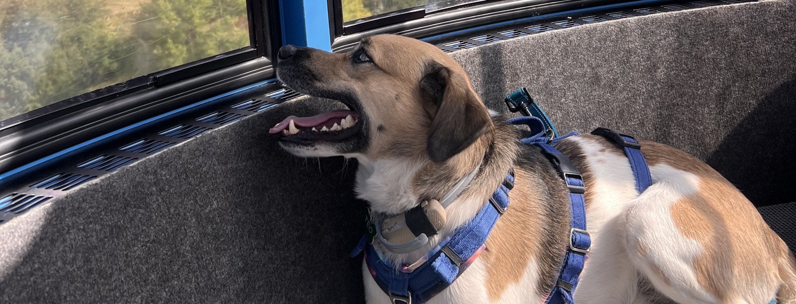

Rehearse at home
Practise the whole routine at home. The station queue shouldn’t be the first full fitting.

← Back to Safety LibrarySafety library / Access & transport
Prepare calmly, watch for fear or nausea, and know when not to board.
A lift saves a climb, but your dog still has to cope with the cabin.
Practise the whole routine at home. The station queue shouldn’t be the first full fitting.
Watch the cabins from a comfortable distance and leave before your dog starts to worry.
Pick a quiet time, a short ride and the emptiest cabin.
Open chairlifts are different: an open seat a dog can fall from. ORMA marks routes that need one as not recommended, unless your dog weighs 8 kg or less and rides them calmly on your lap.
Veterinary material consulted: Merck Veterinary Manual guidance on fear, anxiety and motion sickness in dogs, and the AVSAB humane dog-training statement. Operator policies checked: Cortina Skiworld, Lagazuoi, Val Gardena and Chamonix. Requirements can change by operator and season.
This is general information, not a diagnosis or a substitute for veterinary care.